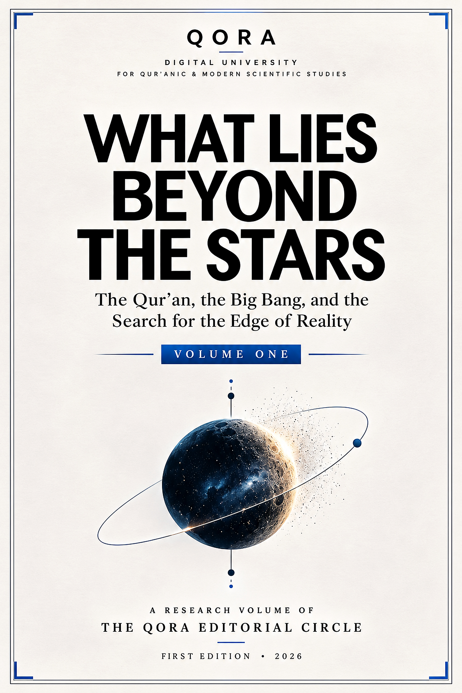

This volume explores selected Qur’anic themes alongside ideas from modern cosmology and physics. It moves carefully between source text, interpretation, scientific context and clearly identified hypotheses. Its purpose is not to force a scientific conclusion from scripture, but to invite disciplined questions and thoughtful reading.

A QORA Research Volume · First Edition · 2026
What Lies Beyond the Stars
The Qur’an, the Big Bang, and the Search for the Edge of Reality
Complete volumeMobile-friendly readerFree access
About the publication
A meeting of revelation, reason and observation.
Explore the volume
Inside this book
Choose a section to open the reader at its starting page.
The complete publication
Read the book online
Navigate pages, search the text, zoom in for comfortable reading, and return to your last position on this device.
WHAT LIES BEYOND THE STARS / VOLUME ONE
Preparing your reading experience…
Page — / 42
Loading book…
Your reading position is saved on this device.QORA · Digital University
Interactive reading requires a modern browser and an internet connection for the PDF reader library. Open or download the PDF directly.
Thoughtful navigationChapter shortcuts, page controls and reading progress.
Comfortable readingFit-to-width and zoom controls for smaller screens and larger displays.
Searchable textFind words and phrases in the PDF’s selectable text layer.